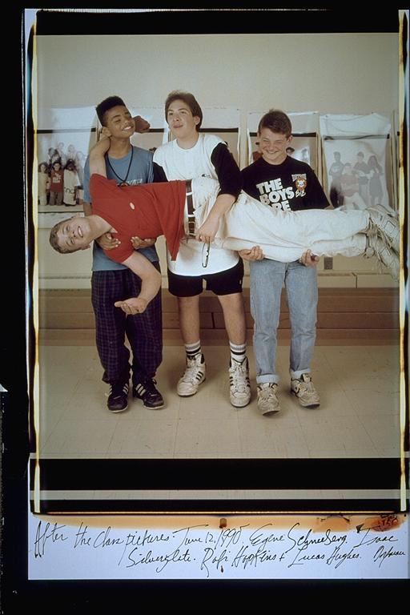

Eugene: "Carrying Lucas" -- Lucas Hughes was 6'5" while we were in elementary school. He was a man's size well before his time. I'm not sure why we decided to carry him, but it made for an interesting effect. I'm wearing an African medallion, I remember I borrowed it from Hakim Rashad (Born Wise). I looked up to him at that time, because he was knowledgable about African American history and Afrocentric concepts. That was seventh grade. Football & Fummycon (sp?) (Aldo's first videogame system from Japan)
Isaac: Lucas was a frikin' giant. I don't know who thought of this pose, but I bet it was Lucas. Great idea. I love this one.
Aldo: I can't help but be affected by what Isaac wrote. It is really true; Lucas was very big for his age. Even when kids seesaw in height, Lucas never did. He was always the tallest of the group. I wonder if that does anything to a kid's psyche. I mean, he was always the leader of any group adventure -- brave, for sure. Maybe because he was always used to being viewed as the oldest?
